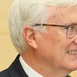
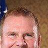

Controlling owners, investors, sales and facility projects for all 15 WNBA teams, each linked to its source.
Who owns every WNBA team
| Team | Controlling owner/group | Team governor | NBA relationship (October 19, 2026) | Effective since | Evidence |
|---|---|---|---|---|---|
| Golden State Valkyries | Joe LacobPeter Guber | Not yet sourced | Shared control (Warriors) | October 5, 2023 | League release |
| New York Liberty | Joe TsaiClara Wu Tsai | Not yet sourced | Shared control (Nets) | January 30, 2019 | Owner release |
| Indiana Fever | Herb Simon | Not yet sourced | Shared control (Pacers) | 2000 | Team release |
| Las Vegas Aces | Mark Davis | Not yet sourced | None identified | February 12, 2021 | League release |
| Seattle Storm | Lisa BrummelGinny GilderDawn Trudeau | Not yet sourced | None identified | 2008 | SEC filing officer/manager only |
| Phoenix Mercury | Mat IshbiaJustin Ishbia | Not yet sourced | Shared control (Suns) | February 7, 2023 | League release |
| Los Angeles Sparks |  Mark Walter | Eric Holoman (managing partner and governor, per Sept. 4, 2026 team release) Team release | Shared control (Lakers, since Oct 2025) | February 2014 | League release |
| Minnesota Lynx | Marc LoreAlex Rodriguez | Not yet sourced | Shared control (Timberwolves, since Jun 2025) | League release | |
| Connecticut Sun (Houston Comets from 2027) |  Tilman Fertitta | Not yet sourced | Shared control (Rockets, since May 14 2026) | Owner release | |
| Chicago Sky | Michael Alter (principal owner) | Not yet sourced | None identified | 2006 | Sportico report (reposted by team) report only |
| Portland Fire | Lisa Bhathal MerageAlex Bhathal | Not yet sourced | None identified | September 18, 2024 | League release |
| Dallas Wings | Bill Cameron (majority) | Not yet sourced | None identified | 2009 | SEC filing officer/manager only |
| Washington Mystics | Ted Leonsis | Not yet sourced | Shared control (Wizards, via Monumental) | May 2005 | Owner release |
| Atlanta Dream | Larry Gottesdiener | Not yet sourced | None identified | February 26, 2021 | League release |
| Toronto Tempo | Larry Tanenbaum | Not yet sourced | Other affiliation (Tanenbaum MLSE role reported; current title not re-verified) | Team release |
Future teams (not in active counts): Cleveland 2028, Detroit 2029, Philadelphia 2030. See future teams.
Publicly disclosed investors
Governor and executive titles never create an ownership row. Parent-company percentages are never converted into franchise percentages. "Former pro athlete" means the person played professionally; tags overlap and are never added together.
| Investor | Team or entity | Relationship | Disclosed stake | Effective | Status | Evidence |
|---|---|---|---|---|---|---|
| Joe Lacob | Golden State Valkyries | Ownership (as described) | Not disclosed | October 5, 2023 | Current as of cited evidence | League release |
| Peter Guber | Golden State Valkyries | Ownership (as described) | Not disclosed | October 5, 2023 | Current as of cited evidence | League release |
| Joe Tsai | New York Liberty, via parent BSE Global (parent) | Indirect (via parent) | Not disclosed | January 30, 2019 | Current as of cited evidence | SEC filing |
| Clara Wu Tsai | New York Liberty, via parent BSE Global (parent) | Indirect (via parent) | Not disclosed | January 30, 2019 | Current as of cited evidence | Owner release |
| Julia Koch and family | New York Liberty, via parent BSE Global (parent of Nets, Liberty, Barclays Center) | Indirect (via parent) | 15% of parent BSE Global (stated in release); franchise-level % not disclosed | June 19, 2024 | Historically disclosed; not reconfirmed | Owner release |
| Herb Simon | Indiana Fever | Ownership (as described) | Not disclosed | 2000 | Current as of cited evidence | Team release |
| Mark Davis | Las Vegas Aces | Ownership (as described) | Not disclosed | February 12, 2021 | Current as of cited evidence | League release |
| Tom Brady | Las Vegas Aces | Ownership (as described) | Not disclosed | October 2, 2023 | Historically disclosed; not reconfirmed | Team release |
| Lisa Brummel | Seattle Storm | Ownership (as described) | Not disclosed | 2008 | Current as of cited evidence | SEC filing |
| Ginny Gilder | Seattle Storm | Ownership (as described) | Not disclosed | 2008 | Current as of cited evidence | Team release |
| Dawn Trudeau | Seattle Storm | Ownership (as described) | Not disclosed | 2008 | Current as of cited evidence | Team release |
| Sue Bird | Seattle Storm | Ownership (as described) | Not disclosed | April 24, 2024 | Historically disclosed; not reconfirmed | Team release |
| Bobby Wagner | Seattle Storm | Ownership (as described) | Not disclosed | July 23, 2025 | Current as of cited evidence | Team release |
| 12 investor groups (2023 share sale, names not all public) | Seattle Storm | Unnamed group (not counted) | 11% combined (reported) | January 4, 2023 | Historically disclosed; not reconfirmed | SEC filing |
| Mat Ishbia | Phoenix Mercury | Ownership (as described) | Not disclosed | February 7, 2023 | Current as of cited evidence | League release |
| Justin Ishbia | Phoenix Mercury | Ownership (as described) | Not disclosed | February 7, 2023 | Historically disclosed; not reconfirmed | League release |
| Mark Walter | Los Angeles Sparks | Ownership (as described) | Not disclosed | February 2014 | Current as of cited evidence | League release |
| Magic Johnson | Los Angeles Sparks | Ownership (as described) | Not disclosed | February 2014 | Historically disclosed; not reconfirmed | League release |
| Todd Boehly | Los Angeles Sparks | Ownership (as described) | Not disclosed | February 2014 | Historically disclosed; not reconfirmed | latimes.com report |
| Stan Kasten | Los Angeles Sparks | Ownership (as described) | Not disclosed | February 2014 | Historically disclosed; not reconfirmed | latimes.com report |
| Robert Patton | Los Angeles Sparks | Ownership (as described) | Not disclosed | February 2014 | Historically disclosed; not reconfirmed | latimes.com report |
| Marc Lore | Minnesota Lynx | Ownership (as described) | Not disclosed | June 24, 2025 | Current as of cited evidence | League release |
| Alex Rodriguez | Minnesota Lynx | Ownership (as described) | Not disclosed | June 24, 2025 | Current as of cited evidence | League release |
| Tilman Fertitta | Connecticut Sun (Houston Comets from 2027) | Ownership (as described) | Not disclosed | May 14, 2026 | Current as of cited evidence | Owner release |
| Michael Alter | Chicago Sky | Ownership (as described) | Not disclosed | 2006 | Current as of cited evidence | Sportico report (reposted by team) |
| Nadia Rawlinson | Chicago Sky | Ownership (as described) | Not disclosed | January 2023 | Current as of cited evidence | Sportico report (reposted by team) |
| John Rogers | Chicago Sky | Ownership (as described) | Not disclosed | Not established | Historically disclosed; not reconfirmed | Sportico report (reposted by team) |
| Laura Ricketts | Chicago Sky | Ownership (as described) | Not disclosed | 2023 | Historically disclosed; not reconfirmed | Sportico report (reposted by team) |
| Mary Dillon | Chicago Sky | Ownership (as described) | Not disclosed | 2023 | Historically disclosed; not reconfirmed | Sportico report (reposted by team) |
| Laura Desmond | Chicago Sky | Ownership (as described) | Not disclosed | 2023 | Historically disclosed; not reconfirmed | Sportico report (reposted by team) |
| Cari Sacks | Chicago Sky | Ownership (as described) | Not disclosed | 2023 | Historically disclosed; not reconfirmed | Sportico report (reposted by team) |
| Tina Tchen | Chicago Sky | Ownership (as described) | Not disclosed | 2023 | Historically disclosed; not reconfirmed | Sportico report (reposted by team) |
| Anne Sempowski Ward | Chicago Sky | Ownership (as described) | Not disclosed | 2023 | Historically disclosed; not reconfirmed | Sportico report (reposted by team) |
| Dwyane Wade | Chicago Sky | Ownership (as described) | Not disclosed | July 2023 | Historically disclosed; not reconfirmed | Team release |
| Lisa Bhathal Merage | Portland Fire | Ownership (as described) | Not disclosed | September 18, 2024 | Current as of cited evidence | League release |
| Alex Bhathal | Portland Fire | Ownership (as described) | Not disclosed | September 18, 2024 | Current as of cited evidence | League release |
| Bill (William M.) Cameron | Dallas Wings | Ownership (as described) | Not disclosed | 2009 | Current as of cited evidence | SEC filing |
| David Box | Dallas Wings | Ownership (as described) | Not disclosed | 2009 | Historically disclosed; not reconfirmed | SEC filing |
| Ted Leonsis | Washington Mystics, via parent Monumental Sports & Entertainment (parent; controlling) | Indirect (via parent) | Not disclosed | May 2005 | Current as of cited evidence | Owner release |
| Sheila Johnson | Washington Mystics, via parent Monumental Sports & Entertainment (parent) | Indirect (via parent) | Not disclosed | May 2005 | Historically disclosed; not reconfirmed | SBJ report |
| Qatar Investment Authority | Washington Mystics, via parent Monumental Sports & Entertainment (parent) | Indirect (via parent) | About 5% of parent Monumental (reported; not stated in release we cite) | July 2023 | Historically disclosed; not reconfirmed | Owner release |
| Larry Gottesdiener | Atlanta Dream | Ownership (as described) | Not disclosed | February 26, 2021 | Current as of cited evidence | League release |
| Suzanne Abair | Atlanta Dream | Ownership (as described) | Not disclosed | February 26, 2021 | Historically disclosed; not reconfirmed | League release |
| Renee Montgomery | Atlanta Dream | Ownership (as described) | Not disclosed | February 26, 2021 | Historically disclosed; not reconfirmed | League release |
| Larry Tanenbaum (Kilmer Sports Ventures) | Toronto Tempo | Ownership (as described) | Not disclosed | May 23, 2024 | Current as of cited evidence | Team release |
| Serena Williams | Toronto Tempo | Ownership (as described) | Not disclosed | March 2025 | Current as of cited evidence | League release |
| Sukhinder Singh Cassidy | Toronto Tempo | Ownership (as described) | Not disclosed | May 2025 | Current as of cited evidence | Team release |
| Lilly Singh | Toronto Tempo | Ownership (as described) | Not disclosed | May 2025 | Current as of cited evidence | Team release |
| Geoff Molson | Toronto Tempo | Ownership (as described) | Not disclosed | September 23, 2025 | Current as of cited evidence | Team release |
| France Margaret Bélanger | Toronto Tempo | Ownership (as described) | Not disclosed | September 23, 2025 | Current as of cited evidence | Team release |
| Scott Lake | Toronto Tempo | Ownership (as described) | Not disclosed | Not established | Current as of cited evidence | Team release |
| Reetu Gupta | Toronto Tempo | Ownership (as described) | Not disclosed | Not established | Current as of cited evidence | Team release |
| Masai Ujiri | Toronto Tempo | Ownership (as described) | Not disclosed | March 31, 2026 | Current as of cited evidence | Team release |
| Kyle Lowry | Toronto Tempo | Ownership (as described) | Not disclosed | July 7, 2026 | Current as of cited evidence | League release |
| Ayahna Cornish-Lowry | Toronto Tempo | Ownership (as described) | Not disclosed | July 7, 2026 | Current as of cited evidence | League release |
Prices and valuations
| Team | Relevant transaction | Price and status | Publisher estimates (credited) | Evidence |
|---|---|---|---|---|
| Golden State Valkyries | 2023: expansion admission fee | $50M (reported (league release does not state the fee)) | CNBC: $1B (May 4, 2026), CNBC estimate Sportico: $850M (May 1, 2026), Sportico estimate | Ledger row |
| New York Liberty | 2019: control sale | Not disclosed in seller filing (Sportico estimate $10-14M; reported debt assumption) | CNBC: $600M (May 4, 2026), CNBC estimate Sportico: $600M (May 1, 2026), Sportico estimate | Ledger row |
| Indiana Fever | None indexed | CNBC: $560M (May 4, 2026), CNBC estimate Sportico: $560M (May 1, 2026), Sportico estimate | ||
| Las Vegas Aces | 2021: control sale | $2M (reported (approximate)) | CNBC: $500M (May 4, 2026), CNBC estimate Sportico: $410M (May 1, 2026), Sportico estimate | Ledger row |
| Seattle Storm | 2008: control sale | $10M (disputed: $10M (Seattle Times 2008) vs about $1M (Sportico 2026)) | CNBC: $450M (May 4, 2026), CNBC estimate Sportico: $425M (May 1, 2026), Sportico estimate | Ledger row |
| Phoenix Mercury | 2023: bundled acquisition (with NBA team) | Bundled; no WNBA price | CNBC: $445M (May 4, 2026), CNBC estimate Sportico: $420M (May 1, 2026), Sportico estimate | Ledger row |
| Los Angeles Sparks | 2014: control sale | Not established from available sources | CNBC: $415M (May 4, 2026), CNBC estimate Sportico: $400M (May 1, 2026), Sportico estimate | Ledger row |
| Minnesota Lynx | 2025: bundled acquisition (with NBA team) | Bundled; no WNBA price | CNBC: $405M (May 4, 2026), CNBC estimate Sportico: $355M (May 1, 2026), Sportico estimate | Ledger row |
| Connecticut Sun | 2026: control sale (with relocation) | $300M (disclosed in seller release) | Not rated | Ledger row |
| Chicago Sky | 2006: expansion admission fee | $10M (reported (secondary compilations; original report not located)) | CNBC: $390M (May 4, 2026), CNBC estimate Sportico: $320M (May 1, 2026), Sportico estimate | Ledger row |
| Portland Fire | 2024: expansion admission fee | $75M (disputed: $75M fee (CNBC, Sportico) vs $125M (AP)) | CNBC: $380M (May 4, 2026), CNBC estimate | Ledger row |
| Dallas Wings | None indexed | CNBC: $370M (May 4, 2026), CNBC estimate Sportico: $325M (May 1, 2026), Sportico estimate | ||
| Washington Mystics | 2005: control sale | Not established from available sources | CNBC: $335M (May 4, 2026), CNBC estimate Sportico: $310M (May 1, 2026), Sportico estimate | Ledger row |
| Atlanta Dream | 2021: control sale | $5M (reported (approximate)) | CNBC: $330M (May 4, 2026), CNBC estimate Sportico: $280M (May 1, 2026), Sportico estimate | Ledger row |
| Toronto Tempo | 2024: expansion admission fee | $50M (reported (AP)) | CNBC: $325M (May 4, 2026), CNBC estimate | Ledger row |
Valuations are CNBC and Sportico estimates, credited to each publisher and not transaction prices. The page shows no ratio, multiple or return. Bundled NBA and WNBA prices are never split.
Who owns WNBA teams? Search the controlling owners, publicly disclosed investors, transaction records and facility projects for all 15 teams in FCB's 2026 ownership reference. Team ownership, governor roles and league investments are recorded separately, with evidence attached to each claim.
One detail from the filings: the Mohegan Tribe's 2003 purchase of the Sun was $2 million in cash plus an $8 million note to the league, according to its SEC registration statement.
What FCB's research shows
10 people with professional playing experience were publicly identified as investors in 7 active franchises
FCB has documented 10 people with professional playing experience who were publicly identified as investors in 7 currently active franchises (Atlanta Dream, Chicago Sky, Las Vegas Aces, Los Angeles Sparks, Minnesota Lynx, Seattle Storm and Toronto Tempo): Alex Rodriguez, Bobby Wagner, Dwyane Wade, Kyle Lowry, Magic Johnson, Masai Ujiri, Renee Montgomery, Serena Williams, Sue Bird and Tom Brady. Disclosures cover 2014-2026; not all holdings have been reconfirmed as of October 19, 2026. Evidence for 5 of them is more than 24 months old and is flagged for recheck, which is not evidence of an exit.
Method: distinct person IDs with has_professional_playing_experience = yes, matched to active-franchise IDs. An executive career is a separate, overlapping tag, not an exclusion (Masai Ujiri played professionally in Europe, per a Nuggets release). Olympic participation alone does not qualify. No row carries an explicit current-holding confirmation, so this is a count of disclosures, not current holdings. Stakes are not disclosed.
Expansion fees: 16.8 times the 2008 fee in 2026 dollars
In 2026 dollars, the reported WNBA expansion fee was $16.5M in 2006 and $15.4M in 2008, against $258M for each 2025 franchise: about 15.6 times the 2006 fee and 16.8 times the 2008 fee in purchasing-power terms. The nominal jump, $10M to $250M, is 25 times. Data through October 19, 2026.
Coverage: 18 control-change and fee events indexed; 11 priced and undisputed, 7 unpriced or disputed. Method: BLS CPI-U (CUUR0000SA0) annual averages against the January-September 2026 average (not a full-year 2026 average); series, periods and index values are exported per row in transactions.csv. Multiples use unrounded values. Caveat: the 2006 and 2008 fees appear only in secondary reports, and the 2025 fee is from AP (the league release names the owners, not the fee). Portland's fee is disputed and excluded. Inflation adjustment measures purchasing power, not investor returns.
6 of 11 tracked facility projects are not operational yet
Among the 11 facility projects FCB tracks, 4 provide operational team-specific practice space, 1 is an operational shared complex and 6 are not yet operational. This project inventory is separate from where all 15 teams currently practice. Data through October 19, 2026.
Budget and funding totals are held back until currency, scope and sources are reviewed. Each project's amounts are listed in the table with their status and currency. Budgets are announcements, not spending, and the Storm's financing is part of the same $64M budget, not an extra investment.
Franchise sales and expansion fees
One row per deal. "Not disclosed" appears only where a document shows nondisclosure; otherwise the row says "not established from available sources." Bundled NBA and WNBA prices are never allocated to the WNBA team, and an unknown amount is never shown as zero.
| Date | Franchise | Seller → buyer | Type | Amount | What it covers | 2026 $ | Evidence (deal) | Evidence (amount) |
|---|---|---|---|---|---|---|---|---|
| January 28, 2003 | Orlando Miracle -> Connecticut Sun | WNBA, LLC (league-held franchise) → Mohegan Basketball Club LLC (Mohegan Tribal Gaming Authority) | control sale (with relocation) | $10M disclosed in filing | $2.0M cash (advanced by MTGA) + $8.0M note payable to WNBA, LLC at 3-month LIBOR + 1.5% | $18.1M | SEC filing | SEC filing |
| 2005 | Washington Mystics | Washington Sports & Entertainment (Abe Pollin) → Lincoln Holdings (Ted Leonsis; Sheila Johnson) | control sale | not established from available sources | franchise (part of a deal that included stakes in other DC teams, reported) | SBJ report | ||
| 2006 | Chicago Sky | — → Michael Alter group | expansion admission fee | $10M reported (secondary compilations; original report not located) | expansion admission fee | $16.5M | Primary not located | |
| 2006 | Seattle Storm (with SuperSonics) | Basketball Club of Seattle (Howard Schultz) → Professional Basketball Club LLC (Clay Bennett) | bundled acquisition (with NBA team) | bundled; no WNBA allocation | Sonics + Storm (+ other assets not established) | Primary not located | ||
| 2008 | Atlanta Dream | — → Ron Terwilliger group | expansion admission fee | $10M reported (original report not located) | expansion admission fee; reported as $1M upfront + installments | $15.4M | Primary not located | |
| 2008 | Seattle Storm | Professional Basketball Club LLC (Clay Bennett) → Force 10 Hoops LLC (Brummel, Gilder, Trudeau, Levinson) | control sale | $10M disputed: $10M (Seattle Times 2008) vs about $1M (Sportico 2026) | franchise | $15.4M | Seattle Times report | Seattle Times report |
| 2009 | Detroit Shock -> Tulsa Shock | Detroit Pistons ownership (Palace Sports & Entertainment; seller entity not confirmed) → Tulsa Pro Hoops LLC (Bill Cameron, David Box) | control sale (with relocation) | not established from available sources | franchise + relocation | SEC filing | ||
| 2014 | Los Angeles Sparks | Kathy Goodman / Carla Christofferson group → Mark Walter, Magic Johnson and Dodgers partners | control sale | not established from available sources | franchise | League release | ||
| October 17, 2017 | San Antonio Stars -> Las Vegas Aces | Spurs Sports & Entertainment → MGM Resorts International | control sale (with relocation) | not established from available sources | franchise + relocation | League release | ||
| January 30, 2019 | New York Liberty | The Madison Square Garden Company → B-Cubed Basketball, LLC (Joe and Clara Wu Tsai) | control sale | not disclosed in seller filing (Sportico estimate $10-14M; reported debt assumption) | franchise; debt treatment reported but not documented | SEC filing | SEC filing | |
| February 26, 2021 | Atlanta Dream | Mary Brock and Kelly Loeffler → Larry Gottesdiener, Suzanne Abair, Renee Montgomery | control sale | $5M reported (approximate) | franchise | $6.1M | League release | Sportico report |
| February 12, 2021 | Las Vegas Aces | MGM Resorts International → Mark Davis | control sale | $2M reported (approximate) | franchise | $2.5M | League release | Sportico report |
| October 5, 2023 | Golden State Valkyries | — → Golden State Warriors ownership | expansion admission fee | $50M reported (league release does not state the fee) | expansion admission fee; reported as paid over time | $54.5M | League release | Sportico report |
| February 7, 2023 | Phoenix Mercury (with Suns) | Robert Sarver → Mat Ishbia, Justin Ishbia | bundled acquisition (with NBA team) | bundled; no WNBA allocation | Suns + Mercury (and other assets not established); $4B reported | League release | ||
| September 18, 2024 | Portland Fire | — → RAJ Sports (Bhathal family) | expansion admission fee | $75M disputed: $75M fee (CNBC, Sportico) vs $125M (AP) | expansion fee vs total commitment unresolved | $79.4M | League release | AP report |
| May 23, 2024 | Toronto Tempo | — → Kilmer Sports Ventures (Larry Tanenbaum) | expansion admission fee | $50M reported (AP) | $50M fee within a reported $115M total commitment | $53M | Team release | AP report |
| June 30, 2025 | Cleveland (begins 2028) | — → Dan Gilbert / Rock Entertainment Group | expansion admission fee | $250M reported (AP); league release names owners but not the fee | expansion admission fee | $258M | League release | AP report |
| June 30, 2025 | Detroit (begins 2029) | — → Tom Gores | expansion admission fee | $250M reported (AP); league release names owners but not the fee | expansion admission fee | $258M | League release | AP report |
| 2025 | Los Angeles Sparks (via Lakers) | Buss family (Lakers) → Mark Walter | not a WNBA transaction (context) | not applicable (Lakers sale did not transfer the Sparks) | Lakers only | League release | ||
| June 24, 2025 | Minnesota Lynx (with Timberwolves) | Glen Taylor → Marc Lore, Alex Rodriguez | bundled acquisition (with NBA team) | bundled; no WNBA allocation | Timberwolves + Lynx; $1.5B reported valuation | League release | ||
| June 30, 2025 | Philadelphia (begins 2030) | — → Josh Harris, David Blitzer (HBSE) | expansion admission fee | $250M reported (AP); league release names owners but not the fee | expansion admission fee | $258M | League release | AP report |
| May 14, 2026 | Connecticut Sun -> Houston Comets (2027) | Mohegan Tribal Gaming Authority → Tilman Fertitta | control sale (with relocation) | $300M disclosed in seller release | $150M paid at closing; $150M due by 2026-12-31 (payment of the second installment not yet documented) | $300M | Owner release | Owner release |
Known gaps: the 2003 Utah Starzz to San Antonio move, the 2003 Charlotte Sting, the 2006-07 Sparks sale, the 2007 Houston Comets sale and the 2002-03 transfers of league-held teams. Defunct franchises are not indexed yet. The 2027 Houston Comets are the relocated Sun franchise, not the 1997-2008 Comets, and the 2026 Portland Fire is a new franchise, not the 2000-02 Fire.
Practice facility investments
| Project / team | WNBA use | Status | Announced budget | Documented funding | Opening (actual or target) | Evidence |
|---|---|---|---|---|---|---|
| Las Vegas Aces training facility Las Vegas Aces | WNBA-exclusive | operational | $40M (reported) | Not itemized | 2023 (before season) | AP report |
| BECU Storm Center for Basketball Performance Seattle Storm | WNBA-exclusive (also team HQ and youth programs) | operational | $64M (stated) | documented private financing: $64M (stated (team) + reported (Seattle Times "privately funded")) | April 28, 2024 (training camp opening per release) | Team release · Team release |
| Phoenix Mercury practice facility (Player 15 Group HQ campus) Phoenix Mercury | WNBA practice facility within a mixed-use campus | operational | $100M (stated) | Not itemized | July 18, 2024 | Team release |
| Valkyries Performance Center Golden State Valkyries | WNBA-exclusive (renovated former Warriors facility) | operational | Not disclosed | Not itemized | February 2025 | Team release |
| Kaiser Permanente Performance Center Portland Fire; Portland Thorns (NWSL) | shared sports facility (two pro teams, same owner) | operational | $150M (reported) | Not itemized | August 22, 2026 (ribbon cutting, OPB) | OPB report |
| Chicago Sky practice facility Chicago Sky | WNBA-exclusive (village plans community facilities around it) | under construction (delayed) | $60M (reported) | public funding (municipal), amount not disclosed (reported) | November 2026 | Team release · SBJ report |
| New York Liberty practice facility New York Liberty | WNBA-exclusive (includes front office, retail) | under construction | $80M (stated) | documented private funding commitment: $80M (stated ("fully-funded by the Liberty's ownership group")) | 2027 | Team release |
| Indiana Fever Sports Performance Center Indiana Fever | WNBA-exclusive (includes front office) | under construction | $78M (stated) | Not itemized | before 2027 season | Team release |
| Sparks training facility Los Angeles Sparks | WNBA-exclusive | under construction | $150M (stated) | Not itemized | 2027 | Team release |
| Dallas Wings practice facility Dallas Wings | WNBA-exclusive | under construction (status disputed) | $80M (reported) | public funding (municipal): $52M (reported (attributed to a TDLR filing)); reported private funding: $27-28M (reported) | April 2027 | Houston Chronicle report |
| Toronto Tempo practice facility Toronto Tempo | WNBA-exclusive with secured city community access | approved | About 100M, currency unresolved (reported (cost detail is in a confidential attachment to the city report)) | documented private funding responsibility (stated in municipal document); public support (in kind) (stated in municipal documents (authorized by council)) | 2028 summer (city programming start) | City of Toronto document · torontosun.com report · City of Toronto document |
No project of their own: Lynx (share with the Timberwolves), Mystics (CareFirst Arena), Dream (partner facility), Sun (none announced). Budgets are announcements, not spending, and the page shows no grand total across budgets, private funding and public support.
Team-by-team ownership profiles
Golden State Valkyries
Joe Lacob and Peter Guber
- Controlling owner
- Joe Lacob and Peter Guber (League release)
- What the source says
- as described in linked source
- Current practice arrangement
- team performance center (fac-valkyries-oakland)
- Documented entities
- Not documented
- Governor
- Not yet sourced
- Public investors
- Joe Lacob, Peter Guber (filter)
- NBA relationship
- Shared control (Warriors)
- Valuation estimates
- CNBC $1B (May 4, 2026); Sportico $850M (May 1, 2026)
- Facility
- Valkyries Performance Center (operational)
- Verified
- October 19, 2026 · Golden State Valkyries team page
New York Liberty
Joe Tsai and Clara Wu Tsai
- Controlling owner
- Joe Tsai and Clara Wu Tsai (Owner release)
- What the source says
- as described in linked source
- Current practice arrangement
- unresolved
- Documented entities
- B-Cubed Basketball, LLC (buyer of the Liberty from MSG (Jan 30, 2019)) SEC filing; New York Liberty, LLC (operating entity (foreign LLC registered in NY)) NY state registry record 4773210 (open-data API; see CSV); BSE Global, LLC (parent (Nets, Liberty, Barclays Center)) NY state registry record 7925006 (open-data API; see CSV)
- Governor
- Not yet sourced
- Public investors
- Joe Tsai, Clara Wu Tsai, Julia Koch and family (filter)
- NBA relationship
- Shared control (Nets)
- Valuation estimates
- CNBC $600M (May 4, 2026); Sportico $600M (May 1, 2026)
- Facility
- New York Liberty practice facility (under construction)
- Verified
- October 19, 2026 · New York Liberty team page
Indiana Fever
Herb Simon
- Controlling owner
- Herb Simon (Team release)
- What the source says
- Fever release: Herb Simon is "chairman and owner of Pacers Sports & Entertainment"; PS&E "joined the WNBA with the expansion Fever in 2000" Background source; present-day control not separately documented.
- Current practice arrangement
- unresolved
- Documented entities
- Not documented
- Governor
- Not yet sourced
- Public investors
- Herb Simon (filter)
- NBA relationship
- Shared control (Pacers)
- Valuation estimates
- CNBC $560M (May 4, 2026); Sportico $560M (May 1, 2026)
- Facility
- Indiana Fever Sports Performance Center (under construction)
- Verified
- October 19, 2026 · Indiana Fever team page
Las Vegas Aces
Mark Davis
- Controlling owner
- Mark Davis (League release)
- What the source says
- as described in linked source
- Current practice arrangement
- team practice facility (operational project fac-aces-henderson)
- Documented entities
- Not documented
- Governor
- Not yet sourced
- Public investors
- Mark Davis, Tom Brady (filter)
- NBA relationship
- None identified
- Valuation estimates
- CNBC $500M (May 4, 2026); Sportico $410M (May 1, 2026)
- Facility
- Las Vegas Aces training facility (operational)
- Verified
- October 19, 2026 · Las Vegas Aces team page
Seattle Storm
Lisa Brummel; Ginny Gilder; Dawn Trudeau
- Controlling owner
- Lisa Brummel; Ginny Gilder; Dawn Trudeau (SEC filing officer/manager only)
- What the source says
- Form D lists Lisa Brummel as executive officer/manager of issuer Force 10 Hoops LLC Form D Related Persons are officers, directors and promoters, not a shareholder or control register. The three-person ownership group and the 2008 acquisition are not established by this filing.
- Current practice arrangement
- team practice facility (operational project fac-storm-interbay)
- Documented entities
- Force 10 Hoops LLC (operating owner (issuer of team equity)) SEC filing; Ackerley Seattle Storm, Inc. (former operating entity) SEC filing
- Governor
- Not yet sourced
- Public investors
- Lisa Brummel, Ginny Gilder, Dawn Trudeau, Sue Bird, Bobby Wagner (filter)
- NBA relationship
- None identified
- Valuation estimates
- CNBC $450M (May 4, 2026); Sportico $425M (May 1, 2026)
- Facility
- BECU Storm Center for Basketball Performance (operational)
- Verified
- October 19, 2026 · Seattle Storm team page
Phoenix Mercury
Mat Ishbia and Justin Ishbia
- Controlling owner
- Mat Ishbia and Justin Ishbia (League release)
- What the source says
- as described in linked source
- Current practice arrangement
- practice facility within a mixed-use campus (fac-mercury-phoenix)
- Documented entities
- Not documented
- Governor
- Not yet sourced
- Public investors
- Mat Ishbia, Justin Ishbia (filter)
- NBA relationship
- Shared control (Suns)
- Valuation estimates
- CNBC $445M (May 4, 2026); Sportico $420M (May 1, 2026)
- Facility
- Phoenix Mercury practice facility (Player 15 Group HQ campus) (operational)
- Verified
- October 19, 2026 · Phoenix Mercury team page
Los Angeles Sparks
Mark Walter
- Controlling owner
- Mark Walter (League release)
- What the source says
- as described in linked source
- Current practice arrangement
- unresolved
- Documented entities
- Not documented
- Governor
- Eric Holoman (managing partner and governor, per Sept. 4, 2026 team release) Team release
- Public investors
- Mark Walter, Magic Johnson, Todd Boehly, Stan Kasten, Robert Patton (filter)
- NBA relationship
- Shared control (Lakers, since Oct 2025)
- Valuation estimates
- CNBC $415M (May 4, 2026); Sportico $400M (May 1, 2026)
- Facility
- Sparks training facility (under construction)
- Verified
- October 19, 2026 · Los Angeles Sparks team page
Minnesota Lynx
Marc Lore and Alex Rodriguez
- Controlling owner
- Marc Lore and Alex Rodriguez (League release)
- What the source says
- as described in linked source
- Current practice arrangement
- unresolved
- Documented entities
- Not documented
- Governor
- Not yet sourced
- Public investors
- Marc Lore, Alex Rodriguez (filter)
- NBA relationship
- Shared control (Timberwolves, since Jun 2025)
- Valuation estimates
- CNBC $405M (May 4, 2026); Sportico $355M (May 1, 2026)
- Facility
- None announced
- Verified
- October 19, 2026 · Minnesota Lynx team page
Connecticut Sun (Houston Comets from 2027)
Tilman Fertitta
- Controlling owner
- Tilman Fertitta (Owner release)
- What the source says
- as described in linked source
- Current practice arrangement
- unresolved
- Documented entities
- Mohegan Basketball Club LLC (operating entity 2003-May 2026) SEC filing
- Governor
- Not yet sourced
- Public investors
- Tilman Fertitta (filter)
- NBA relationship
- Shared control (Rockets, since May 14 2026)
- Valuation estimates
- Not rated
- Facility
- None announced
- Verified
- October 19, 2026 · Connecticut Sun team page
Chicago Sky
Michael Alter (principal owner)
- Controlling owner
- Michael Alter (principal owner) (Sportico report (reposted by team) report only)
- What the source says
- Sportico report (reposted by the Sky): Michael Alter "will remain the club's principal owner" Report-based evidence even though it is hosted on the team site.
- Current practice arrangement
- unresolved
- Documented entities
- Not documented
- Governor
- Not yet sourced
- Public investors
- Michael Alter, Nadia Rawlinson, John Rogers, Laura Ricketts, Mary Dillon, Laura Desmond, Cari Sacks, Tina Tchen, Anne Sempowski Ward, Dwyane Wade (filter)
- NBA relationship
- None identified
- Valuation estimates
- CNBC $390M (May 4, 2026); Sportico $320M (May 1, 2026)
- Facility
- Chicago Sky practice facility (under construction (delayed))
- Verified
- October 19, 2026 · Chicago Sky team page
Portland Fire
Lisa Bhathal Merage and Alex Bhathal
- Controlling owner
- Lisa Bhathal Merage and Alex Bhathal (League release)
- What the source says
- as described in linked source
- Current practice arrangement
- shared complex with the NWSL Thorns (fac-raj-hillsboro)
- Documented entities
- RAJ Sports Management, LLC (owner-affiliated management entity) OREGON state registry record 239032899 (open-data API; see CSV)
- Governor
- Not yet sourced
- Public investors
- Lisa Bhathal Merage, Alex Bhathal (filter)
- NBA relationship
- None identified
- Valuation estimates
- CNBC $380M (May 4, 2026)
- Facility
- Kaiser Permanente Performance Center (operational)
- Verified
- October 19, 2026 · Portland Fire team page
Dallas Wings
Bill Cameron (majority)
- Controlling owner
- Bill Cameron (majority) (SEC filing officer/manager only)
- What the source says
- Form D lists William Cameron as director and executive officer of Tulsa Pro Hoops LLC The filing does not establish majority ownership or control.
- Current practice arrangement
- unresolved
- Documented entities
- Tulsa Pro Hoops LLC (operating entity (bought Detroit Shock 2009)) SEC filing; Dallas Wings Development, LLC (facility/development affiliate (inferred from name; not confirmed)) TEXAS state registry record 32104439040 (open-data API; see CSV); Dallas Wings Community Foundation (team foundation) TEXAS state registry record 32064701421 (open-data API; see CSV)
- Governor
- Not yet sourced
- Public investors
- Bill (William M.) Cameron, David Box (filter)
- NBA relationship
- None identified
- Valuation estimates
- CNBC $370M (May 4, 2026); Sportico $325M (May 1, 2026)
- Facility
- Dallas Wings practice facility (under construction (status disputed))
- Verified
- October 19, 2026 · Dallas Wings team page
Washington Mystics
Ted Leonsis
- Controlling owner
- Ted Leonsis (Owner release)
- What the source says
- as described in linked source
- Current practice arrangement
- unresolved
- Documented entities
- Not documented
- Governor
- Not yet sourced
- Public investors
- Ted Leonsis, Sheila Johnson, Qatar Investment Authority (filter)
- NBA relationship
- Shared control (Wizards, via Monumental)
- Valuation estimates
- CNBC $335M (May 4, 2026); Sportico $310M (May 1, 2026)
- Facility
- None announced
- Verified
- October 19, 2026 · Washington Mystics team page
Atlanta Dream
Larry Gottesdiener
- Controlling owner
- Larry Gottesdiener (League release)
- What the source says
- as described in linked source
- Current practice arrangement
- unresolved
- Documented entities
- Not documented
- Governor
- Not yet sourced
- Public investors
- Larry Gottesdiener, Suzanne Abair, Renee Montgomery (filter)
- NBA relationship
- None identified
- Valuation estimates
- CNBC $330M (May 4, 2026); Sportico $280M (May 1, 2026)
- Facility
- None announced
- Verified
- October 19, 2026 · Atlanta Dream team page
Toronto Tempo
Larry Tanenbaum
- Controlling owner
- Larry Tanenbaum (Team release)
- What the source says
- as described in linked source
- Current practice arrangement
- unresolved
- Documented entities
- Tempo Basketball Club Inc. (operating entity (tenant in city lease)) City of Toronto document
- Governor
- Not yet sourced
- Public investors
- Larry Tanenbaum (Kilmer Sports Ventures), Serena Williams, Sukhinder Singh Cassidy, Lilly Singh, Geoff Molson, France Margaret Bélanger, Scott Lake, Reetu Gupta, Masai Ujiri, Kyle Lowry, Ayahna Cornish-Lowry (filter)
- NBA relationship
- Other affiliation (Tanenbaum MLSE role reported; current title not re-verified)
- Valuation estimates
- CNBC $325M (May 4, 2026)
- Facility
- Toronto Tempo practice facility (approved)
- Verified
- October 19, 2026 · Toronto Tempo team page
Future teams
- Cleveland (2028): Dan Gilbert (League release)
- Detroit (2029): Tom Gores (League release)
- Philadelphia (2030): Josh Harris and David Blitzer (League release)
The league announced all three on June 30, 2025, subject to Board approval. Each fee was reported at $250M (AP report). They are outside every active count on this page. If they launch on schedule with these owners, 11 of 18 teams would share control with an NBA team by 2030. That is a projection, not a finding.
The full expansion story is at WNBA expansion teams.
Frequently asked questions
Who owns WNBA teams?
Each of the 15 teams has its own controlling owner; the ownership table above lists each one with the document that names them.
Does the NBA own the WNBA?
No single owner holds every team. The NBA relationship column in the ownership table shows, team by team, where a WNBA team shares an owner with an NBA team and what document supports it.
Which WNBA investors played professionally?
Alex Rodriguez, Bobby Wagner, Dwyane Wade, Kyle Lowry, Magic Johnson, Masai Ujiri, Renee Montgomery, Serena Williams, Sue Bird and Tom Brady were publicly identified as investors, per the investor register. Not every holding has been reconfirmed as of October 19, 2026.
What did the Mohegan Tribe pay for the Sun?
$10 million in 2003: $2 million in cash plus an $8 million note to the league, according to SEC filings.
Is Tom Brady part owner of the Aces?
The Aces announced on October 2, 2023 that Brady acquired an ownership interest. His stake was not disclosed, and FCB has not found a later reconfirmation.
Does Sue Bird own part of the Storm?
The Storm announced on April 24, 2024 that Bird joined its ownership group. Her stake was not disclosed.
Methods, data and sources
- Compiled by: Ryan Moalemi for Full Court Buckets.
- Sources: team and league releases, SEC filings (Form D, S-4, 10-Q and exhibits), owner releases and City of Toronto documents. Where no primary document exists, the earliest original report is used and labeled as a report.
- Evidence: every record links the document behind it. A deal row links both the document that establishes the event and the one that establishes the amount.
- Investors: only investors that teams, leagues or filings have made public; stakes appear only when disclosed.
- Prices: amounts are nominal as disclosed or reported. 2026-dollar figures use BLS CPI-U (CUUR0000SA0) annual averages against the January to September 2026 average. They measure purchasing power, not returns.
- Valuations: CNBC (May 4, 2026) and Sportico (May 1, 2026) estimates, each credited to its publisher.
- Coverage: 15 active teams indexed; 12 have a sourced controlling-owner record (not yet primary-sourced for control: Seattle Storm: officer/manager only; Chicago Sky: report only; Dallas Wings: officer/manager only). Investor register: 62 rows = 54 person-or-organization relationships with active franchises (53 distinct people or families, 1 organization, across 15 franchises; 41 relationships tied to a primary document, 13 to a labeled report only) + 7 future-team rows + 1 unnamed group. Investors are the ones teams or filings have made public; this is not a complete cap table.
- Governors: 1 of 15 sourced (Los Angeles Sparks); the rest are not yet sourced.
- Not yet sourced: defunct franchises and the transactions listed as known gaps.
Owner photos: 10 owners shown with openly licensed photos from Wikimedia Commons, matched to the person through Wikidata, cropped to the face and resized by FCB (changes made). 12 owners without a licensable photo are shown with initials. Credits: Joe Lacob: Joe Lacob White House 2023.jpg by The White House, Public domain; Peter Guber: Peter Guber White House 2023.jpg by The White House, Public domain; Clara Wu Tsai: Clara Wu Tsai at the 2024 New York Liberty Ticker Tape Parade (cropped).jpg by WOWyerrr, CC BY-SA 4.0; Herb Simon: Herb Simon NBA All-Star Announcement Press Conference - 53307854219 (cropped).jpg by IndyMayorsOffice, Public domain; Ginny Gilder: Ginny Gilder.jpg by Lucinda Literary, CC BY-SA 4.0; Mat Ishbia: Mat Ishbia.jpg by United1986, CC BY-SA 4.0; Mark Walter: Mark Walter in 2025.jpg by Prime Minister's Office of Japan (首相官邸), CC BY 4.0; Alex Rodriguez: A-Rod Damon adjusted.jpg by A-Rod Damon.jpg: Keith Allison derivative work: Inefable001 (talk), CC BY-SA 2.0; Tilman Fertitta: United States Ambassador to Italy and San Marino Tilman Joseph Fertitta.jpg by US State Department, Public domain; Ted Leonsis: Ted Leonsis headshot 2013.jpg by DCBiz500, CC BY-SA 3.0. Details per photo are in owner_photos.csv.
| Collection | Records |
|---|---|
| ownership | 18 |
| investors | 62 |
| entities | 24 |
| transactions | 22 |
| facility_projects | 11 |
| facility_financials | 18 |
| valuations | 53 |
Download the data
Data dictionary
# Data dictionary: FCB WNBA ownership dataset (v3)
Data version: v3 · Data through: Oct 19, 2026 (PT) · License: CC BY 4.0 (https://creativecommons.org/licenses/by/4.0/), credit Full Court Buckets and link https://fullcourtbuckets.com/wnba/owners/.
Source of truth: the CSVs in `data/wnba/owners/`. `automation/build_owners.py` generates every count, table and finding on the page from them; nothing on the page is typed in by hand.
Corrections, media and data questions: ryan@fullcourtbuckets.com (general: hello@fullcourtbuckets.com).
## Conventions used in every file
- **IDs** are stable slugs (`rel-…`, `ent-…`, `txn-…`, `fac-…`, `obs-…`, `val-…`, `team-…`, `src-…`). Permalinks use IDs, never ranks or dollar figures.
- **Dates** are ISO. `date_precision` says day, month or year; missing days are never invented.
- **Unknown is never zero.** A blank amount always comes with a status field that says why (not disclosed, not established, disputed, bundled).
- **Source types:** primary filing · primary document (municipal) · primary record (registry) · official announcement · official publication · original journalism · publisher estimate · FCB calculation · none located.
- **Evidence status:** sourced · report only · primary not located · disputed.
- **Current status:** current as of cited evidence (evidence dated in the last 24 months) · current (controlling owner corroborated by a 2026 report) · historically disclosed; current status not reconfirmed · future team: announced ownership.
- **Money:** USD millions, nominal unless the column says 2026 dollars. Arithmetic runs at full precision and is displayed to one decimal.
## ownership.csv: current ownership summary (18 rows: 15 active teams, 3 announced) · 12 fields
team_id · team · scope (active / future) · team_page (existing FCB slug) · controlling_owner · controlling_owner_source_url · controlling_owner_evidence · governor (sourced for 1 of 15 active teams as of Oct 19, 2026: Los Angeles Sparks; "not yet sourced" elsewhere) · governor_source_url · nba_relationship_current · nba_relationship_at_2026_05_04 (the snapshot used for valuation comparisons) · facility_project_ids · last_verified_at.
NBA relationship values: shared controlling ownership (evidence) · other affiliation (e.g., minority/parent role) · no qualifying shared-control relationship identified · unclear.
## investors.csv: publicly disclosed ownership and investor register (62 rows) · 22 fields
| Field | Definition |
|---|---|
| relationship_id | One person/entity–team relationship |
| person_or_entity_id | Counts unique people separately from relationships |
| entity_type | person · family group · institution · unnamed group |
| team, team_scope | Team; active or future |
| investor | As named in the source |
| role_as_described | The source's own words (principal, minority, partner, alternate governor…). Governor titles never create equity |
| relationship_type | team ownership as described (legal structure not documented) · indirect via documented parent · unnamed investor group |
| parent_path | Parent entity when the stake is in a parent (BSE Global, Monumental) |
| disclosed_stake | Only when disclosed; parent percentages are not converted into franchise percentages |
| effective_date, date_precision | Approval date if published, else announcement date |
| last_evidence_date | Date of the newest document we cite for this relationship |
| last_verified_at | Date FCB last checked it |
| current_status | See conventions |
| background_tags | Semicolon list; tags can overlap and are never summed as exclusive groups. "former pro athlete" = played professionally |
| background_basis | stated in cited document · FCB classification from public biography (source not linked) |
| evidence_status, source_type, primary_source_url | See conventions |
| counts_toward_active_findings | yes only for named investors at active teams |
| notes | Caveats |
League-level investors (the 2022 capital raise) are not in this file and never enter franchise counts.
## entities.csv: documented legal entities (24 rows) · 14 fields
entity_id · team · entity · documented_role (exactly what the record shows: issuer, buyer entity, lease tenant, foreign registration…) · jurisdiction_of_formation · registration_to_do_business (kept separate) · record_type · record_id · record_date · primary_source_url · status (found / not found) · last_verified_at · limitation (a registry entry is not proof of ownership or control) · notes.
## transactions.csv: franchise transaction ledger (22 rows) · 27 fields
transaction_id (one per deal; announcement, approval and closing are milestone columns, not separate rows) · year · franchise (relocations shown as A -> B) · seller · buyer · transaction_type (control sale · control sale (with relocation) · expansion admission fee · bundled acquisition (with NBA team) · not a WNBA transaction (context)) · announcement_date · approval_date · closing_date · amount_usd_m (blank for bundles) · bundled_amount_usd_m · currency · amount_status (disclosed in filing · disclosed in seller release · reported · disputed · not disclosed in seller filing · not established from available sources · bundled; no WNBA allocation) · consideration_scope (cash/note/installments/total-commitment) · event_source_url / event_source_type (the document that establishes the deal) · amount_source_url (the document that establishes the number; often journalism) · cpi_series · cpi_source_period · cpi_source_value · cpi_target_period · cpi_target_value · amount_2026_usd_m · eligible_for_summaries · exclusion_reason · last_verified_at · notes.
**Inflation.** Adjusted = nominal × target index ÷ source index. BLS CPI-U, U.S. city average, all items, NSA (CUUR0000SA0), from api.bls.gov on Oct 19, 2026. Source period = the deal year's annual average (matches BLS published averages 2002–2024). 2025 = 11-month average (no October 2025 index was published). Target = January–September 2026 average, 332.243 (latest month September 2026, 336.940). This measures purchasing power, not investor returns. Disputed and bundled amounts are excluded from summaries. Expansion fees and control sales are never combined in one statistic.
## facility_projects.csv: one row per project (11 rows) · 17 fields
project_id · project_name · linked_teams (a shared campus is one project with several teams) · use_classification (WNBA-exclusive · WNBA practice facility within a mixed-use campus · shared sports facility · unknown) · project_type · asset_owner_operator (only if documented) · location · delivery_status (announced · approved · under construction · under construction (delayed) · under construction (status disputed) · operational · canceled · unknown) · status_as_of · announced · original_target · revised_target · operational_date · floor_area_sqft · floor_area_scope (WNBA portion or whole campus) · primary_source_url · notes.
Teams with no project (Lynx and Mystics share facilities; Dream uses a partner facility; Sun has none announced) appear in ownership.csv with an empty facility_project_ids.
## facility_financials.csv: money observations (18 rows) · 14 fields
observation_id · project_id · amount_usd_m · precision · observation_type (announced/reported project cost · original budget · revised budget · documented private funding commitment · reported private funding · public funding · public support (in kind)) · funding_type · funder · status (stated · reported · authorized…) · observation_date · source_url · source_type · total_bucket · supersedes_or_note · notes.
**Total buckets, never added to each other:** A = announced budget of unique projects (revised budget replaces the original; shared and scope-unresolved projects shown separately) · B = documented private funding · C = public funding/support, by type and status (never summed into one subsidy figure) · D = verified expenditure (no records yet). A project budget is not money spent, and debt that funds a budget isn't extra investment.
## valuations.csv: publisher estimates (53 rows) · 9 fields
valuation_id · team · publisher · published_date · amount_usd_m · currency · value_type ("unspecified (publisher estimate)") · source_url · note. These are CNBC and Sportico proprietary estimates, credited to them; they are not transaction prices or FCB data.
## owner_photos.csv: controlling-owner photos (one row per named controlling owner of an active team)
photo_id · person · team_id · image_path (self-hosted 96x96 face crop) · display (photo / initials) · source_url (Wikimedia Commons file page) · title · author · license · license_url · identity_basis (Wikidata item whose image property names the file) · crop · retrieved. Photos are not covered by FCB's CC BY 4.0 license; each keeps its own license. Initials are used where no openly licensed, face-visible photo was matched to the person.
## sources.csv: source index (78 rows) · 7 fields
source_id · url · issuer · source_type · used_in · access_status (paywalled sources are flagged) · archive_url (empty: archive.org snapshots not yet captured).
License: FCB's dataset, calculations and text are free to reuse under CC BY 4.0 with credit to Full Court Buckets and a link to this page. Valuations remain the work of CNBC and Sportico, and linked documents belong to their publishers.
Corrections: spot an error? Email ryan@fullcourtbuckets.com with a link to the document. Each fix is dated.
Media, data citations & editorial: ryan@fullcourtbuckets.com | General: hello@fullcourtbuckets.com
Cite this page
Moalemi, R. (2026, October 19). WNBA team owners 2026: who owns every team, plus sales and facility investments (Dataset v3). Full Court Buckets. https://fullcourtbuckets.com/wnba/owners/
Source: Full Court Buckets WNBA ownership dataset v3 (data through October 19, 2026), https://fullcourtbuckets.com/wnba/owners/
How this story was made: drafted with AI tools from the sources linked above, then reviewed and edited by Ryan Moalemi. How we make Full Court Buckets